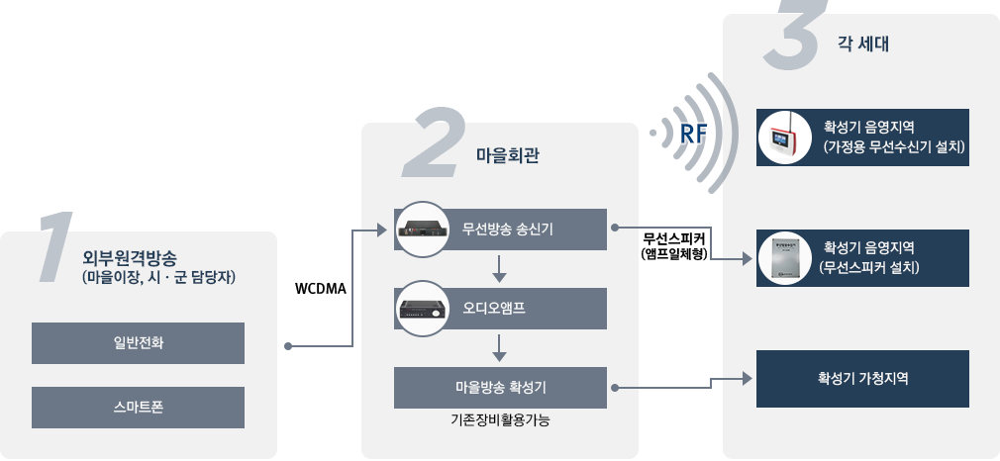
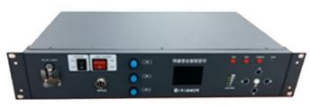
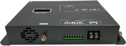
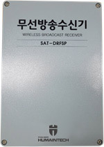
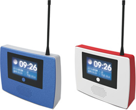
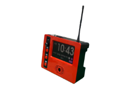

무선마을방송
-
주요기능
- 행정홍보, 복지지원정보, 기상정보 등의 기본적 주민 편익 정보 전달 및 지역주민간 정보교환(마을대소사, 지역행사 등)을 위한 인프라 역할
- 무선방송을 통해 주택방음 및 단열로 인한 외부 방송이 원활하게 전달되지 않는 문제를 각 가정 및 음영지역에 수신기설치로 해결
- 마을 이장 부재시 전화방송을 통해 시간과 장소의 구애를 받지않고 신속하고 효율적인 방송 가능
-
시스템 구성

-
장비 주요 규격
무선마을방송송신기

내장된 WCDMA 모뎀 및 장착된 마이크를 통하여 실시간 무선방송
세계 어느 곳에서도 전화가 가능한 곳이면 관할지역내 방송 가능
구분 세부항목 규격 메인부 MCU 32Bit / 72MHz 오디오 입력(AUX) 1, 출력(AUX) 1 / 600Ω, 0dBm 무선망 접속 WCDMA(3G) 저장메시지 및 ARS 압축방식 MPEG-3 오디오 샘플링 주파수 44KHz / 16bit 음성메시지 최대 255개 전원부 입력 AC 90 ~ 264V(외부앰프 연동 시 AC220V) 출력 AC 220V / 9A(외부앰프 연결용) 조작 및 표시부 조작 및 표시부 단말기 상태 정보 표시, 제어 및 설정 오디오 Level meter 방송 출력 오디오 Level 표시 MIC 방송 및 테스트용 MIC 재생 녹음된 이전 방송 내용 재생 메뉴 단말기 환경 설정 시험방송 AMP 및 내부 스피커로 시험방송 기능 경보 및 방송 전화방송, 마이크 방송기능
홍보 방송, 재난 안내 경보 방송 기능외부기기 연동 외부기기 오디오 신호 입·출력 가능
외부기기 앰프 연동 가능
외부기기 접점 신호 입력 출력 가능 1PORT상태감시 및 복구 단말기 자동 복구 기능(워치독)
앰프 출력 및 전원 확인 기능
스피커(유니트) 출력 확인 기능
RF 출력 확인 기능무선방송 송출기

서비스 소외 주민이 없도록 반경 최대 6km까지 무선방송 가능
무선신호 감쇠 최소화 및 혼선방지
그룹설정을 통해 특정계층에게만 방송 가능
구분 세부항목 규격 사양 MCU CPU 32Bit 사용 주파수 421.996875 MHz ~ 422.053125 MHz (6.25KHz 단위) 주파수 안정도 ±1ppm (-20 to +60℃) 주파수 채널 10CH (4K00F1E) 출력 임피던스 50 Ω RF 출력 5Watt 이하 사용전원 DC +12V , 3A 동작 온도 -20℃ ~ +60℃ 동작 습도 10% ~ 90% (결로 없음) Size (W×H×D) 210 X 125 X 35 mm 기능 LCD 디스플레이 : 현재 상태 값 표시 LED : 전원부 LED 상태값 표시 마을 공지사항 안내용 간이무선국 주파수 사용 RF 송신부를 별도의 외장형으로 분리하여 RF 신호선의 감쇄 최소화 별도의 프로토콜 구현으로 혼선 완벽 방지 컬러코드 999개, 지역별 8개의 Group 설정을 부여하여 지역별 및 전체 방송 옥외무선방송수신기

유선 스피커의 선로 끊김, 유지관리 어려움 등을 해결하여 효율적 관리
기존의 마을방송 수신이 원활하지 않은 음영지역 해소
선로공사가 필요 없어 쉽고 빠른 시공성
구분 세부항목 규격 메인부 CPU 32bit Microprocessor 메모리 FLASH 512KByte, SRAM 64KByte 무선수신부 사용 주파수 421.996875 MHz ~ 422.053125 MHz (6.25KHz 단위) 주파수 채널 10채널 입력 임피던스 50Ω 전원부 입력 AC 220V/DC + 24V(SMPS 사용) 앰프부 출력 및 임피던스 정격 70W 이상(35W x 2CH) / 8Ω 기능 각종 특성 T.H.D 1% 이하, 주파수 특성 100 ~ 20,000Hz 이내, 효율 80& 이상 오디오/데이터 송∙수신 및 방송 무선송신기의 방송 수신 및 오디오 출력 기능 방송 음량 조절 볼륨 가정용 무선수신기

유선 스피커의 선로 끊김, 유지관리 어려움 등을 해결하여 효율적 관리
기존의 마을방송 수신이 원활하지 않은 음영지역 해소
선로공사가 필요 없어 쉽고 빠른 시공성
구분 세부항목 규격 메인부 CPU 32bit Microprocessor 메모리 FLASH 512KByte, SRAM 64KByte 무선수신부 사용 주파수 421.996875 MHz ~ 422.053125 MHz (6.25KHz 단위) 수신감도 -120dBm 주파수 채널 10채널 안테나 임피던스 50Ω 전원부 입력 DC+5V / 2A 조작 및 표시부 표시기능 달력, 시간, 온도, 습도 방송 스피커 5W 이상, 음성 출력 기능 오디오/데이터 송∙수신 및 방송 무선송신기의 방송 수신 및 오디오 출력 방송 음량 조절 볼륨 달력(양력/음력) 및 문페이즈 표출 시간(오전 / 오후) 및 온도 표시 마을회관의 무선송신기와 시간 동기화 방송 녹음 및 재생 비상용 백업 배터리 내장(옵션) 기상청 기상예보 표출(옵션) 크기 220(W) X 170(H) X 50(D) mm 7인치 가정용 무선수신기

7인치 디스플레이 채택으로 넓은 화면으로
통합방송단말기의 방송을 수신정전 시 내부 배터리 전원으로 자동 전환
(배터리 내장형의 경우 AC/DC 사용중 표시)무선방송 수신 및 방송 기능
수신된 방송 자종 저장
전면부 버튼을 통해 저장된 방송 다시듣기 기능
수신기 자동 복구 기능(워치독)
전면 LCD를 통해 현재 시간, 온도, 기상정보 표시
구분 세부항목 규격 메인부 CPU 32bit / 200MHz 이상 Microprocessor 메모리 FLASH 1024 KB 무선수신부 사용 주파수 421.996875 MHz ~ 422.053125 MHz (6.25KHz 단위) 수신감도 -120dBm 주파수 채널 10채널 안테나 임피던스 50Ω 전원부 입력 DC+12V / 1A 출력 및 표시부 디스플레이 전면 7인치 TFT LCD 방송 스피커 5W 이상, 음성 출력 기능 오디오/데이터 송∙수신 및 방송 전면 7인치 LCD 녹음 방송 재생 (1회 최대 10분, 최대 70개, 80분) 내장 온도센서에서 감지된 실내 온도 표시 동네예보 온도 표시 기능 날씨/미세먼지 표시 기능 볼륨/LCD 밝기 조절 기능 비상용 백업 배터리 내장(배터리형) 크기 260(W) X 194(H) X 71(D) mm